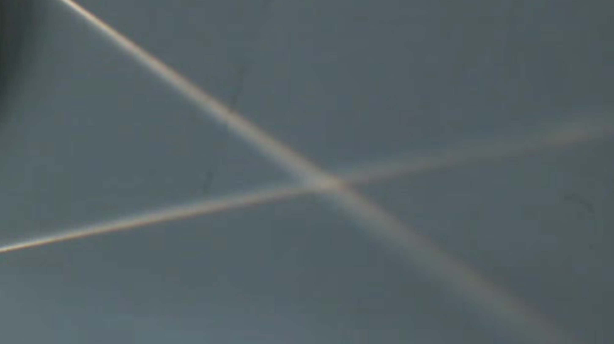
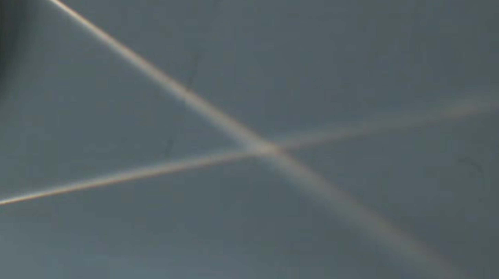

This page was generated from `/home/lectures/exp3/source/notebooks/L6/Imaging Errors.ipynb`_.

Imaging Errors¶
During our derivation of the imaging equation for lenses and the lens-maker equation we have been working under the paraxial approximation. This approximation stated, that all rays are close to the optical axis and therefore make only small angles with the surface normals of the curved surfaces of lenses (but also mirrors). If we violate this approximation, i.e. if we use rays, which are incident for from the optical axis or strongly inclined, then we end up with reflections and refraction which do not obey the imaging equation. In addition we have seen that light propagation for different colors is subject to different refractive indices (remember the prism). Thus we will induce aberrations, related to color.
According to Seidel, aberration are classified the following way
chromatic aberration
spherical aberration
coma
astigmatism
field curvature
field distortion
Chromatic Aberrations¶
Chromatic Aberration are based on the fact that light of different color has a different speed of propgation and thus also a different refractive index. We experienced that also for the prism, where it was useful to create a spectrograph. Here it is causing colored edges in you image, which you do not want.
As the refractive index for shorter wavelength is typically higher, we expect that the blue color has a shorter focal distance than the red color.
|
|---|
Fig.: Chromatic aberration. Left: Sketch of the chromatic aberration, focusing red light less strong than blue. Middle: Image from the lecture. Right: Rendered image using the refractive index for BK7 glass. |
 
 
Such a chromatic aberrations may be corrected by using a system of two lenses as shown below.
|
|---|
Fig.: Correction of chromatic aberration. |

Such so-called achromatic lenses are typically consisting of a bixconvex lens that is glues to a bi-concave lens. Both lenses are made often made of different materials. Each of the lenses \(i\) have a focal length according to the lensmaker equation
where the \(\rho\) is given by
Here the \(R_{i1},R_{i2}\) denote the different surfaces of the lens from left to right.
As we have treated lens systems already, we may refer to the calculation for short distances of the lenses and write down the refractive power of the lens system as
If now the regfractive index at two different wavelength is given, i.e. \(n_{1r},n_{1b}\) for the first lens and \(n_{2r},n_{2b}\) for the second lens, we may formulate our color correcrion wish as
This is just saying that the refractive powers of the lens system for the red and the blue colors should be the same, as then the two colors at least are focused into the same point. After some slight transformation, this gives us
This is a condition for the radii of the two lenses, which can be further teared down, if we consider the lesn system in the image. There the two inner surfaces of the two lenses have the same radius of curvature, i.e. \(R_{12}=R_{21}\) and we also find \(R_{11}=R_1=-R_{12}=-R_{21}\) and \(R_{22}=R_2\). Using this, we may further simplify the above equation.
Spherical Aberration¶
The spherical abberation arises due to the fact that we have always considered a simplification of the angluar functions to their first order Taylor series expansion. If the angles of incidence on the spherical surfaces get to large, we cannot do that anymore and need to consider higher order corrections.
The result is that parallel rays which are far from the optical axis are not imaged into the same focal point as the paraxial rays, but to points closer to the lens. You might have all seen such effect also in the case of your empty coffee cup, when the sunlight enters and causes a so-called caustics. This pattern, you observe there is also the result of a soherical aberration. The image below shows the spherical aberration of a lens.
|
|---|
Fig.: Spherical aberration. |


To be a bit more qauntitative, we would like to reconsider the refraction at a single spherical surface as depicted in the image below.
|
|---|
Fig.: Spherical aberration. |

For this case we may again write down the focal length with a more accurate calculation. We use therefore the relations \(\sin(\beta)=\sin(\alpha)/n, \sin(\alpha)=h/R, \alpha=\beta+\gamma\). With the help of those we obtain \(f=R+b\) and \(b=R\sin(\beta)/\sin(\gamma)\), which we may further convert into
which we may further transform into
with the help of replacing the consines. Expansion of the square roots will further lead to
This result is already enough to understand that the focal length (as in the case of the concave mirror) depends on the height \(h\) under which the ray is incident on the spherical surface. The second term in the square brackets represents exactly this term, which is shortening the focal length when \(h\neq 0\).
From that one may also obatain an imaging equation for s single spherical surface, which reads as
This looks already for a single surface complicated but demonstrates that the image plane is now not anymore a plane but the its location depends on \(R\) and \(h\). This dependence for a single surface is then also reflected in other image distortions such as the field curvature.
Coma¶
While we considered so far always rays parallel to the optical axis at different distance, rays which eminate from points not on the optical axis (also not on the optical axis at infinite distance), yield also aberrations. One of the is the “coma”. There rays inclined with the optical axis do not meet in a single off-axis point on the image side. They cause more intense regions with a comet like tail to the outside radial direction.
|
|---|
Fig.: Coma. |


Astigmatism¶
Also the astigmatism arises when rays from point sources away from the optical axis are imaged by a lens. To understand the effect one may split the rays from such a source into rays which are in the vertical plane (meridional plane) and other which are in a plane perpendicular to it (sagittal plane). Considering those rays one finds,that the meridional rays are focused to a point closer to the lens as compared to the sagittal rays, which are focuse to a point at farther distance- This causes a that the focus of the lens goes from an horziontal elliptical shape into a vertical elliptical shape when moving the screen through the focal region on the image side.
For an extended image as shown below, this results in the sperate focusing of vertical (left) and horizontal lines (right) in the image.
|
|---|
Fig.: Astigmatism of a lens showing the focusing of vertical (left) and horizontal (right) lines of an object (letter “F”) at different focus positions for a lens tilted in the beam path. |


This distortion, i.e. the elliptical shape of the focus has been used advatageously in single molecule microscopy to locate their position alsong the optical axis, which is typically a challenge for optical microscopy.
Field Curvature¶
The field curvature is related to our calculations of the spherical abberation. We have seen there, that the focal distance depends on the height \(h\) of the rays over the optical axis. This means also means that the image plane is actually not anymore a plane but a curved surface as shown below. The rays incident from point \(A_0\) and \(A_1\) do not meet in the same plane. This plane is even different for meridional and saggital rays. This typically results in the fact, that you may have the center of the image in focus, but not the edges or vice versa.
|
|---|
Fig.: Field curvature. |


Distortions¶
Barrel or cushion shaped distortions in the image are found when inserting apertures in the optical path. This results in the removal of certain ray path ending up in field distortions.
|
|---|
Fig.: Cushion (left) and barrel (right) type of distortions. |


These distortions come from the fact that rays, which now must travel through and aperture are further or closer than their actual images without the aperture. This is best understood from the sketches below. The central ray here indicates the center \(M\) of the region into which the point \(A_0\) is imaged. If we insert an aperture behind the lens, the central ray will not be able to pass but other rays, which create an area around \(M_1\), which is at larger distance than \(M\) from the optical axis. Now, the larger the point \(A_0\) is from the optical axis, the larger is also the distance of \(M_1\) from \(M\) and the optical axis. This turns a regular grid like in th eexperiment above into a cushion shaped object. The situation is reversed in the case when the aperture is inserted infront of the lens as dpiected on the right side of the sketch below. There the distortion is barrel shaped as validated by the experiment.
|
|---|
Fig.: Cushion (left) and barrel (right) type of distortions. |